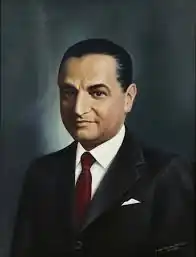

Хорхе Ікаса Коронель (ісп. Jorge Icaza Coronel; 10 червня 1906, Кіто, Еквадор — 26 травня 1978, Кіто, Еквадор) — еквадорський письменник, драматург, громадський діяч, дипломат. Один із найяскравіших представників індіхенізму ( течія у суспільній думці, образотворчому мистецтві та літературі країн Латинської Америки, в яких індіанці становлять значну частину населення. Індихенізм спрямовано реабілітацію корінного населення) в літературі країн Латинської Америки, що передував магічному реалізму.
Коли йому було три роки, помер батько, Хосе Антоніо Ікаса Манзо.
Після цього у дитинстві довго жив на гасієнді свого дядька Енріке Коронела в Андах, де познайомився із життям корінних народів Еквадору. Близькість з тубільцями робила його дуже чутливим до цієї реальності підпорядкування та бідності. Вивчав медицину в Центральному університеті Еквадору у Кіто. Закінчив Національну консерваторію. У молодому віці вів богемний спосіб життя. Після закінчення навчання виступав як актор на сцені, написав ряд п'єс. Пізніше працював чиновником у міністерстві фінансів. Був членом Соціал-демократичної партії Еквадору, виступав за права індіанців. Дебютував як драматург комедіями вдач. У 1928 році написав свою першу п'єсу "El Intruso". Як режисер і драматург Ікаса мав постійні проблеми із цензурою та представниками католицької церкви у своїй країні. Після публікації роману "Уасипунго" в 1934 році Хорхе Іказа Коронель досяг міжнародної слави. "Уасипунго" порівнювали з "Гронами гніву" Джона Стейнбека і відносили до жанру пролетарського роману. Після 1936 повністю присвятив себе прозі, автор низки романів і повістей, пронизаних підкреслено жорстоким реалізмом. Для творів Ікаса Коронель характерні напружена динамічність, запровадження розмовної мови індіанців, і навіть окремі риси натуралізму. Хорхе Ікаса Коронель — один із засновників Спілки письменників та художників Еквадору. Директор Національної еквадорської бібліотеки (1960). З 1953 працював аташе з культури в посольстві Еквадору в Аргентині. Читав лекції з проблем корінних народів Еквадору у багатьох навчальних закладах США. Основна тема творчості — трагічна доля індіанців і гострі соціальні конфлікти: романи "Уасипунго" ("Huasipungo", 1934), "На вулицях" ("En las calles", 1935) , "Чоло" (1937), "Півжиття в блиску" (1942), "Ромеро і Флорес" ("El chulla Romero y Flores", 1958 рік, в перекладі "Людина з Кіто", 1966 рік), збірники оповідань "Бруд сьєрри" (1933), "Шість разів умертвлений" (1952) та ін. Автор пронизаної глибоким психологізмом автобіографічної трилогії "У пастці" ("Atrapados", 1972). Помер від раку.